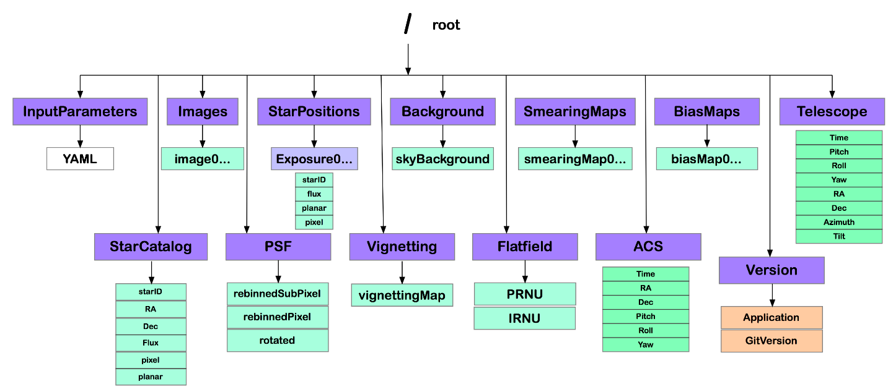

PlatoSim3 writes its output to an HDF5 file. HDF stands for Hierarchical Data Format, and is a next generation file format that was specifically designed to store and organise large amounts of data.
HDF5 behaves much likes a Unix-like folder structure, but where folders are called groups. Each group can contain other groups, array datasets, and scalar attributes. For example, the first subfield image is located in /Images/image000000 in the HDF5 file.
Structure
The general structure of the output file if shown in Fig. 1. The colour code in this diagram is as follows:
- purple: groups (which contain other groups and/or datasets and/or attributes)
- green: datasets
- orange: attributes

Figure 1: Structure of the HDF5 output file.
Inspecting the Structure & Content in Python
How-To
Under /docs/tutorials/InspectHDF5 you can find tutorials that demonstrate how you can inspect the structure and the content of the HDF5 output file. This can be done with the SimFile class we offer in the /python/simfile.py module (as described in Inspect HDF5 using simFile.ipynb), or with one of the following packages:
- h5py (as decribed in
Inspect HDF5 using h5py.ipynb)
- and PyTables (as described in
Inspect HDF5 using PyTables.ipynb).
These packages have to be installed with conda install. To use them, you must do the following imports and create the following objects:
4 from simfile
import SimFile
5 simFile = SimFile(<full path to the HDF5 file>)
10 h5pyFile = h5py.File(<full path to the HDF5 file>)
15 pytablesFile = tables.openFile(<full path to the HDF5 file>)
In the following sections, we will discuss which groups are present in the output HDF5 files and which information their datasets and attributes contain. To access a dataset in a given group, the following commands can be used:
1 simDataset = simFile.hdf5file[
"<group name>"][
"<dataset name>"]
3 h5pyDataset = h5pyFile[
"/<group name>/<dataset name>"]
5 pytablesDataset = pytablesFile.root.<group name>.<dataset name>
and to access an attribute in a given group:
1 simAttribute = simFile.hdf5file[
"<group name>"].attrs[attribute name>]
3 h5pyAttribute = h5pyFile[
"<group name>"].attrs[
"<attribute name>"]
5 pytablesAttribute = pytablesFile.root.<group name>._v_attrs.<attribute name>
You can use matplotlib.pyplot.imshow to visualise 2D datasets (images, bias maps, smearing maps, etc.), and matplotlib.pyplot.plot and matplotlib.pyplot.scatter to plot the columns of the datasets against each other. In some cases, SimFile offers alternative methods to access and visualise dataset. They will be mentioned in the appropriate section below.
To get an overview of the groups and attributes, you can use the following commands:
Configuration Parameters
To enable you to trace back which configuration parameters you have used to generate a certain HDF5 file, we have added the InputFiles group to the output HDF5 files, which contains a copy of the YAML file that was used as input.
To check the value of an individual configuration parameter (from the stored YAML file), the following commands can be used:
1 simValue1 = simFile.getInputParameter(
"<block name in the YAML file>",
"<parameter name in the YAML file>")
2 simValue2 = simFile.hdf5file[
"InputParameters"][
"<block name in the YAML file>"].attrs[
"<parameter name in the YAML file>"]
4 h5pyValue = h5pyFile[
"InputParameters"][
"<block name in the YAML file>"].attrs[
"<parameter name in the YAML file>"]
6 pytablesValue = pytablesFile.root.InputParameters.<block name
in the YAML file>._v_attrs.<parameter name
in the YAML file>
Have a look here to find out the names of the blocks and parameters in the configuration file.
Images, Sub-Images, and Imagettes
The Images group contains one dataset, images<exposure number with 6 digits>, per exposure (counting starts at 000000). An alternative way to get hold of such a dataset is
1 simImage = simFile.getImage(<exposure number>)
Visualisation can be done as follows:
1 simFile.showImage(<exposure number>)
In case you have stored the images at sub-pixel level too, you can find these in the SubPixelImages group, named subPixelImage<exposure number with 6 digits>.
To retrieve a small square imagette, centred about a star with the given ID, use the command
1 simImagette = simFile.getImagette(<star ID>, <number of the exposure>, <radius>)
where the output imagette has size 2 * radius + 1 pixels in both directions (expressed in pixels).
Smearing Maps
The SmearingMaps group contains one dataset, **smearingMap<exposure number with 6 digits>, per exposure (counting starts at 000000).
Bias Maps
The BiasMaps group contains one dataset, **biasMap<exposure number with 6 digits>, per exposure (counting starts at 000000).
Star Catalogue
The StarCatalog group contains the following datasets:
- starIDs: sequential number of those stars in the input star catalogue that were detected on the sub-field in at least one exposure;
- RA: right ascension of these stars, expressed in degrees;
- Dec: declination of these stars, expressed in degrees;
- Vmag: V magnitude of these stars;
- xFPmm and yFPmm: initial planar focal-plane coordinates of these stars, expressed in mm;
- rowPix and colPix: initial pixel coordinates of these stars (float values).
You can get hold of all these datasets in one go, with the following command:
1 simStarIds, simRa, simDec, simVmag, simXFPmm, simYFPmm, simRowPix, simColPix = simFile.getStarCatalog()
Star Positions
The StarPositions group contains one group, Exposure<exposure number with 6 digits>, per exposure, which comprises the following datasets:
- starID: sequential number of those stars that are visible in the current sub-field;
- rowPix and colPix: pixel coordinates of those stars, averaged over the duration of the exposure (float values);
- xFPmm and yFPmm: planar focal-plane coordinates of those stars, averaged over the duration of the exposure and expressed in mm;
- flux: number of photons of those stars that got detected in the sub-field during the exposure.
To get hold of these dataset in one go, you can use the following command:
1 simStarIds, simRowPix, simColPix, simXFPmm, simYFPmm = simFile.getStarCoordinates(<exposureNumber>, [minVmag = <minimum V magnitude
in the selection>], [maxVmag = <maximum V magnitude
in the selection>])
Background
The Background contains one dataset, skyBackground, which contains the background (one entry per exposure), expressed in photons / pixel / exposure.
Attitude
The ACS group contains the information concerning the spacecraft attitude, organised in the following groups:
- Time: time elapsed at the end of each exposure since the start of the simulation, expressed in seconds;
- Yaw: jitter yaw angle at the end of each exposure, expressed in arcsec;
- Pitch: jitter pitch angle at the end of each exposure, expressed in arcsec;
- Roll: jitter roll angle at the end of each exposure, expressed in arcsec;
- PlatformRA and PlatformDec: right ascension and declination of the platform pointing at the end of each exposure, expressed in degrees;
To get hold of the Euler angles and of the platform pointing, you can use the following commands:
1 simJitterYaw, simJitterPitch, simJitterRoll = simFile.getYawPitchRoll()
2 simPlatformRa, simPlatformDec = simFile.getPlatformPointingCoordinates()
Telescope
The Telescope group contains the following datasets:
- Time: time elapsed at the end of each exposure since the start of the simulation, expressed in seconds;
- TelescopeYaw: drift yaw angle at the end of each exposure, expressed in arcsec;
- TelescopePitch: drift pitch angle at the end of each exposure, expressed in arcsec;
- TelescopeRoll: drift roll angle at the end of each exposure, expressed in arcsec;
- TelescopeRA and TelescopeDec: right ascension and declination of the telescope pointing at the end of each exposure, expressed in degrees;
- Azimuth: azimuth angle of the telescope for each exposure, expressed in degrees;
- Tilt: tilt angle of the telescope for each exposure, expressed in degrees;
- FocalPlaneOrientation: focal-plane orientation angle for each exposure, expressed in degrees.
PSF
The PSF group contains the following datasets:
- rebinnedPSFpixel: selected PSF rebinned to the image's number of pixels;
- rebinnedPSFsubPixel: selected PSF rebinned to the image's number of sub-pixels;
- rotatedPSF:
and the following attributes:
- rotationAngle: angle over which the PSF was rotated, expressed in degrees;
- selectedPSF: information on which PSF was selected:
- for a Gaussian PSF this reports the standard deviation of the Gaussian, expressed in pixels
- for a pre-computed PSF this reports which one was selected from the PSF HDF5 file.
You can also get hold of the datasets as follows:
1 simPsf = simFile.getPsf(<name of the dataset>)
Visualisation can be done as follows:
1 simFile.showPSF(<name of the dataset>)
Vignetting
The vignetting map is contained by the vignettingMap dataset in the VignettingMap group and can be accessed with the following commands:
Flatfield
The Flatfield group contains two datasets:
- PRNU: pixel response non-uniformity map for the simulated sub-field;
- IRNU: intra-pixel response non-uniformity for the simulated sub-field.
These can be accessed with the following commands:
1 simPrnu = simFile.getPRNU()
2 simIrnu = simFile.getIRNU()
Version
The Version group contains two attributes:
- Application: the application that was used to generate the HDF5 file (i.c. PlatoSim3);
- GitVersion: version of the PlatoSim3 software that was used to generate the HDF5 file.
Alternatives to Python
IDL
IDL users can access the HDF5 file using, for example,
path = FILEPATH(“Simul01.hdf5")
file = H5F_OPEN(path)
contents = H5_PARSE(path)
help, contents, /STRUCTURE
...
help, contents.Images, /STRUCTURE
...
dataset = H5D_OPEN(file,'/Images/image000000')
image = H5D_READ(dataset)
print, size(image)
Visualisation Tools
There are two alternatives to Python that involve no coding we have been using ourselves (to quickly check the data):
 1.8.11
1.8.11